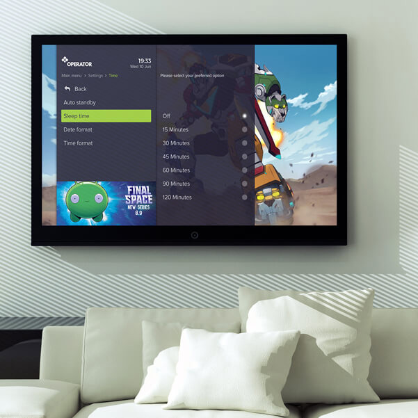

Evaluate Existing Journeys
Existing user journeys were reviewed to identify opportunities for improvement without introducing unnecessary complexity.
Telecommunications & Television
A visual and UX refresh designed to modernise Charter Spectrum's experience on existing set-top box hardware.

Overview
Charter Spectrum is one of the largest cable operators in the United States. The project focused on introducing a completely refreshed user interface and unified brand experience across an existing estate of deployed set-top boxes.
Unlike a typical greenfield project, the challenge was to modernise the experience while working within the constraints of hardware already installed in customers' homes.
The objective was to create a cleaner, more coherent and more premium user experience while retaining compatibility with the existing platform.
The challenge
The existing user interface had evolved over time and no longer reflected the Spectrum brand experience.
The project needed to:
Working within an established platform meant every enhancement needed to balance user benefit against technical limitations.
My role
As part of the UI design team I was responsible for:
I worked closely with both engineering teams and Charter's design stakeholders to ensure the final experience aligned with project objectives.
Understanding The Problem
The project started with a review of the existing customer experience.
Several areas were identified where the interface could be improved:
Because the platform was already deployed, changes had to feel familiar while delivering a noticeably improved experience.
Approach
Existing user journeys were reviewed to identify opportunities for improvement without introducing unnecessary complexity.
The new interface aligned more closely with Spectrum branding through updated colours, typography and layout principles.
Priority information was surfaced more clearly while secondary information was simplified or reorganised.
Core interactions remained recognisable for existing users, reducing the learning curve while improving the overall experience.
Design System
A unified Spectrum visual language was introduced across the platform.
This ensured consistency between the interface and broader customer touchpoints.
Typography was refined to improve readability and hierarchy in a television viewing environment.
Updated components included:
Creating a shared design language improved consistency throughout the experience.
Detailed specifications and implementation support helped maintain design quality throughout delivery.
Key features
The existing guide felt dated and visually dense.
The guide was redesigned with clearer hierarchy, improved navigation and stronger content focus.
Users could browse content more easily while benefiting from a more contemporary visual experience.
Legacy settings and navigation areas lacked visual consistency.
A streamlined menu structure and updated styling were introduced.
Navigation became more intuitive and more closely aligned with Spectrum branding.
Programme information lacked visual impact and branding consistency.
The infobar was redesigned to surface important information more effectively.
Users could quickly access programme information without disrupting viewing.
Configuration screens were functional but difficult to scan.
A cleaner hierarchy and improved layout system was introduced.
Settings became easier to navigate and understand.
Selected screens
Before-and-after redesign demonstrating improvements to browsing and content hierarchy.
Refreshed navigation experience aligned with Spectrum branding.
Updated programme information layer providing clearer viewing context.
Modern multi-column settings interface designed for television interaction.
Impact
The refreshed interface was successfully developed and received positive internal feedback.
Although the project ultimately did not proceed to full commercial deployment, it provided valuable experience working directly with Charter stakeholders and demonstrated how an existing television platform could be transformed through thoughtful UX and visual design.
The project also strengthened cross-team collaboration between design, engineering and client stakeholders during delivery.
What I Learned
If I revisited the project today I would:
Gallery